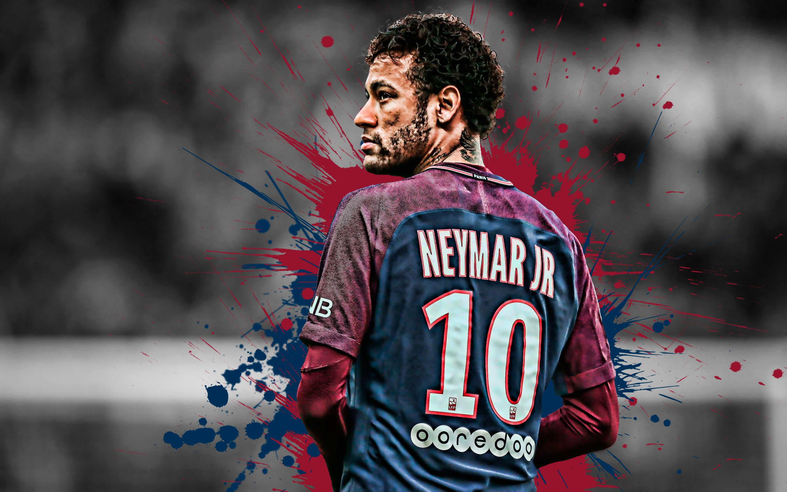

Neymar
is a Brazilian footballer who plays for Brazil national team
and the French club ‘Paris Saint-Germain.’ He is known as one
of the world’s leading footballers. Neymar, like many other
football players in Brazil,started off as a street footballer.
But his father, who had played professional football, helped
him in taking the game seriously so that hecould become a
professional. Neymar joined the youth ranks at ‘FC Santos’when
he was only 11 years old. In fact he was accepted into the youth
program of the popular Spanish club ‘Real Madrid’ but he decided
to stay back in Brazil after he was offered a higher pay.
Throughout his time at‘Santos,’ Neymar scored one spectacular
goal after another, and his skills became the talk of the town.
As a result, the biggest clubs in the world vied with each other
to sign him. In 2013, he signed with ‘Barcelona’ and immediately
made an impact before finally winning the treble for the Catalan
club in 2015. During the course of his career, Neymar went on to
become a prominent player for the Brazilian national team and helped
his team reach the semi-final of the 2014 ‘World Cup’ which was held
in Brazil. Neymar is without a doubt one of the leading footballers in
the world and is all set to become one of the greatest footballers of
his generation.